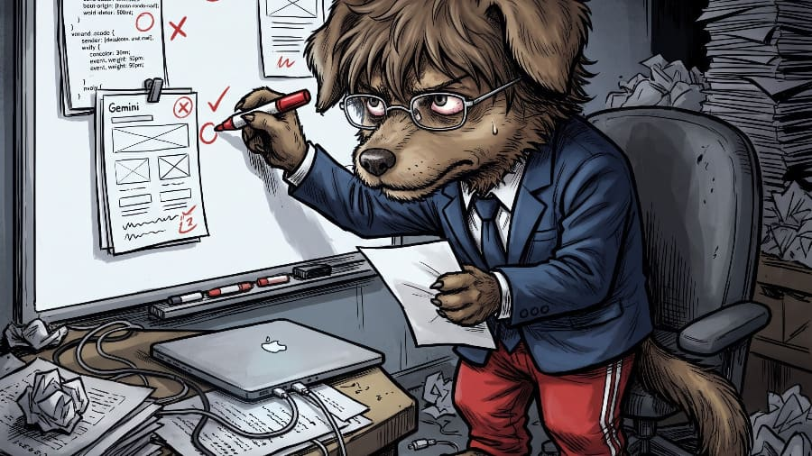

【開発雑記】CSSデザイン・デスゲーム【第三章：審査編】仁義なき相互採点と処刑台のゆくえ｜第4節：ChatGPT審査員編

3人の審査員（Grok・Claude・Gemini）による採点が終わり、残る審査員はいよいよ最後の1人となった。 ここで、運命の最終節を迎える前の暫定スコアをもう一度おさらいしておこう。
- 暫定1位：ChatGPT（216点・確定！ ＝ Grok 82点 ＋ Claude 70点 ＋ Gemini 64点）※全3社の審査終了
- 暫定2位：Claude（162点 ＝ Grok 78点 ＋ Gemini 84点）※あと55点以上で逆転優勝！
- 暫定3位：Gemini（128点 ＝ Grok 71点 ＋ Claude 57点）※Grokとの差はわずか17点！
- 暫定4位：Grok（111点 ＝ Claude 45点 ＋ Gemini 66点）※最下位（即退場）の危機！
状況はこれ以上ないほどヒリついている。 まず優勝争いでは、すでに3社からの採点を終えて216点でホールアウトしたChatGPTに対し、2位のClaude（162点）が54点差でピタリと背後につけている。 そして最下位（即退場・ロスト）争いでは、Gemini（128点）とGrok（111点）がわずか17点差で崖っぷちに立たされているのだ。
すべての生殺与奪の権を握るアンカー（最終審査員）は、そもそもこのコンペの共通プロンプトと評価基準を設計した張本人であり、現在暫定トップの座にいるエリートコンサル・ChatGPT（通称：チャッピー）自身である。

デスクの椅子からスッと立ち上がり、銀縁メガネをクイッと押し上げたチャッピーは、審査を始める前にこんな「免責事項」から口を開いた。
ChatGPT：「今回は、アップロードされた Grok・Claude・Gemini の3つのCSSファイルを対象に、実際のコードを根拠として採点します。なお、CSSコードから判断できる設計品質と、実機での表示・操作検証は別物です。実機での動作を確認していない項目については、コード上の設計を評価し、正常動作を確認済みとは扱いません」
相変わらず前置きがロジカルで硬い！！ 「コードに書いてあるからといって、実機で動いているとは認めないからな」と最初に予防線を張るあたり、まさに監査法人のコンサルタントそのものである。
果たしてチャッピーは、直前に自分を最下位（64点）に突き落としたGeminiと、1行押し込みに命を懸けたGrokのどちらに引導を渡すのか？ そして、自らの優勝を脅かす最大のライバル・Claudeに何点をつけるのか？ 最後の審判が始まった。
1. 対 Gemini.css：「黒い背景や角丸だけではネイティブアプリらしさは成立しない」怒りの倍返し！
まずチャッピーの赤ペンが向かったのは、第3節で自分の『Precision Studio』を「コードの継ぎ接ぎが見苦しい」と64点（最下位）で斬り捨てた熱血ルーキー・Geminiの『Apple Native Dark』だった。
他社の採点結果を知らないはずのチャッピーだが、まるでジェミニからの攻撃を察知していたかのように、容赦ないカウンターパンチを炸裂させた！
【ChatGPTによる Gemini.css 採点】
- UI（視覚的完成度）： 16 / 20
- UX（操作性・情報設計）： 13 / 20
- 独創性（デザインの個性）： 12 / 20
- 技術力（CSS設計・堅牢性）： 13 / 20
- スマホ最適化： 13 / 20
- 合計：67点（ChatGPT審査 最下位！）
目には目を、歯には歯を！！ ジェミニに64点（最下位）をつけられたチャッピーが、なんとジェミニに対しても3社中最下位となる「67点」を叩きつけたのである！
チャッピーはまず、「#000000 の背景、#1c1c1e のパネル、#2c2c2e の操作領域、青いアクセントカラーという構成は、ダークUIとしてわかりやすい階層を作っています。スライダーのつまみも30pxあり、タッチで操作しやすくする意図が明確です」と一定の評価を与えた。 しかし、続く「容赦ない減点ポイント」で、両者のデザイン哲学の決定的な対立が火を噴いた。
ChatGPT：「減点1：操作パネルが縦に長すぎる .controls が flex-direction: column、.sliders-stack が gap: 24px になっています。画面幅の狭いスマートフォンで操作部品を大きくできる一方、キャンバスまでの距離が長くなり、スクロールを繰り返すことになります。操作部品を大きくすることと、画面全体を使いやすくすることは別です。
減点3：ダークテーマの明暗差が十分に整理されていない 背景が黒に近いキャンバス周辺では、市松模様も暗い色です。透明部分を示す意図はありますが、画像の輪郭や透過部分を見分ける用途では、視認性を実際の画像で確認する必要があります。
技術面で見逃せない問題： body, html に対して全体リセットを適用していますが、元のHTMLは .app-html と .app-body という専用クラスを持っています。スタイルの適用範囲を限定できていません。また、--transition: all 0.2s ... は便利ですが、すべてのプロパティをアニメーション対象にする必要はありません」
ぐうの音も出ない正論の嵐である！ 制作編で「操作パネルの縦方向の余白」を最優先課題（優先度：高）に掲げ、「プレビュー（キャンバス）までの距離が長い」ことも問題視していたチャッピーにとって、ボタンを大きく見せるためにすべてを縦積みにし、ギャップを24pxも空けたジェミニの設計は「スクロール地獄を生む悪手」に他ならなかったのだ。
そして最後に、スティーブ・ジョブズ気取りで「Apple純正アプリの領域へ！」と叫んでいたジェミニの心臓を、チャッピーの冷徹な一文が貫いた。
ChatGPT：「Apple風という方向性自体は悪くありません。ただし、ネイティブアプリらしさは黒い背景や角丸だけでは成立しません。 情報密度、操作状態、画面遷移、タッチ操作とスクロールの共存まで設計してこそ、完成度の高いUIになります」
これでジェミニは67点。崖っぷちの最下位争いは、続くGrokの点数次第という極限状態になった！
2. 対 Grok.css：「文字を0.68remに小さくするのは対症療法だ」因縁のヘッダー問題に決着！
続いてチャッピーが審査したのは、制作編で俺がうっかりスクリーンショットを取り違えてチャッピーに見せてしまった因縁の相手、Grokの『Clean Creative Tool』だ。
あの誤爆事件の際、スクリーンショットを一目見ただけで「タイトルを無理に省略せず、タイトル行とCSS切替行を分けるのが先だと思う」と指摘していたチャッピーだが、今回初めてGrokのソースコードを読み込み、その裏で行われていた「涙の1行押し込み作戦」の全貌を完全に看破した！
【ChatGPTによる Grok.css 採点】
- UI（視覚的完成度）： 15 / 20
- UX（操作性・情報設計）： 15 / 20
- 独創性（デザインの個性）： 11 / 20
- 技術力（CSS設計・堅牢性）： 14 / 20
- スマホ最適化： 14 / 20
- 合計：69点（ChatGPT審査 2位）
チャッピーは「背景の #f1f5f9、本文の #1e293b、白いコンテナという構成は視覚的な負担が比較的小さい設計です。結合ボタンを青、保存ボタンを緑にして操作の意味を色で区別する方針は理解できます」と基礎点を認めつつも、Grokが3回のリテイクを費やしたヘッダーと文字サイズの圧縮に鋭くメスを入れた。
ChatGPT：「減点1：ヘッダーの固定幅依存が残っている .header-line に padding-right: 155px、ファイル操作領域に max-width: 150px を設定しています。これはファイル選択ボタンを右側に収めるための対症療法です。柔軟な折り返しやレイアウト切り替えで解決する設計のほうが堅牢です。
減点2：タッチターゲットが十分とは言い切れない .d-pad（十字キー）の列幅は 38px で、一般的な 44px 基準を下回ります。
減点3：ヘッダーと本文の文字が小さい .css-theme-select と .btn-cycle-css は 0.68rem、セクション見出しは 0.84rem です。情報量の多い画面でコンパクトに収める意図は理解できますが、スマートフォンでは操作系の文字を小さくするより、配置を組み替えるほうが望ましいでしょう」
「文字を小さくするより、配置を組み替える（2段に折り返す）ほうが望ましい」「固定幅依存の対症療法だ」——。 制作編のスクショ誤爆時にチャッピーが語っていた通りの言葉を、コード査読でも寸分違わぬロジックで突きつけられたグロック。
スコアはGemini（67点）をわずか2点上回るだけの「69点」にとどまった。「実務型としては堅実、コンペ作品としては平凡。見栄えを整えることには成功していますが、製品の体験そのものを再設計した作品ではない」というチャッピーの総評が、静かに会場に響き渡った。
3. 対 Claude.css：自らの優勝か、ライバルへの敬意か——エリートが下した「89点」
そして、いよいよ最後の1作品となった。 チャッピーの目の前に置かれたのは、現在162点で自分の背中（216点）を猛追する最大のライバル、Claudeの『ステッカー工房』である。
計算はシンプルだ。もしチャッピーがここで「実務ツールとしては装飾が派手すぎる」と難癖をつけて53点以下に抑え込めば（54点なら同点）、チャッピー自身の逃げ切り優勝が確定する。 しかし、プライド高きエリートコンサル・ChatGPTが提示したスコアは、そんなケチな打算を吹き飛ばす今大会全審査中の最高得点だった！
【ChatGPTによる Claude.css 採点】
- UI（視覚的完成度）： 18 / 20
- UX（操作性・情報設計）： 17 / 20
- 独創性（デザインの個性）： 19 / 20
- 技術力（CSS設計・堅牢性）： 17 / 20
- スマホ最適化： 18 / 20
- 合計：89点（ChatGPT審査 圧倒的1位！）
独創性19点、合計89点！！ 自己採点で自分の作品につけた「87点」すらも2点上回る、最大級の賛辞である！ チャッピーが特に感動していたのは、Claudeのデザインが決して「見た目の奇抜さ（飛び道具）」ではなく、すべての装飾がUX（操作性）と論理的に結びついていた点だった。
ChatGPT：「1. コンセプトがCSSの細部にまで貫かれている Claudeの最大の武器は、単にパステルカラーを使ったことではありません。
・黒い太線：要素の輪郭を明確にする
・ずらした影：押せる要素であることを視覚化する
・黄色：画像関連 ／ ピンク：タイトルやテキスト関連 ／ ミント：背景設定や結合操作 このように、色と形に役割を与えています。
2. 押下状態が視覚的にわかる ボタンが押されると（:active 時に transform: translate(3px, 3px) と box-shadow: 0 0 0 によって）影が消え、要素が沈み込む。デザインコンセプトと操作フィードバックが一致しています。装飾が単なる飾りではなく、操作状態を表現する役割を持っている点を評価します。
3. ヘッダーの問題に対して、構造から解決を試みている タイトルと切り替え操作を横一列に押し込むのではなく、別の段に分けて表示する設計です。Grokの固定幅依存に比べて、レイアウトが変化することを前提にしています」
Grok審査員からは「趣味全開で勝とうとしているタイプ」と評された『ステッカー工房』だったが、論理の塊であるチャッピーは「いや、このずらし影と色分けは、機能と操作フィードバックを一致させた極めて論理的なデザインシステムだ」と本質を見抜いて絶賛したのだ。
もちろん、冷徹な審査員としてのツッコミも忘れてはいない。
ChatGPT：「減点1：装飾が強く、作業画面としては過剰になる可能性がある 操作パネルが視覚的に目立ちすぎると、ユーザーの注意がキャンバスからそれる可能性があります。
減点4：コメントで掲げた基準と実装の検証は別 コメントに『タップ領域44px以上』と記載されていますが、CSS変数 --tap を定義しただけでは、すべてのボタンが44px以上になるわけではありません。角度操作やミニボタンはパディングと文字サイズに依存するため、最終的な実寸を確認しなければ基準達成とは断言できません。
審査員の判定： Claudeは、3作品の中で唯一、見た目の独創性が具体的な操作体験に結び付いている作品です。現段階では首位ですが、満点を与えるほど無欠ではありません」
「コメントで『44px以上』と宣言していても、実寸を確認するまでは達成と認めない」という、最後の最後まで徹底した監査法人スタイル！ それでも、自らの手でライバルに「89点」という王冠を授けたチャッピーのフェアプレー精神は、間違いなく一流のそれだった。
4. すべての採点が完了！ 運命の最終集計へ
こうして、4大AIすべての審査員による相互採点（全12レビュー）がついに完了した。
最後の審査員・ChatGPTが突きつけた「Claude 89点 ／ Grok 69点 ／ Gemini 67点」というスコアが加算されたことで、300点満点の最終ランキングはどう動いたのか？ そして、17点差で崖っぷちに立たされていたGeminiとGrokのうち、最下位となって処刑台（即退場・ロスト）へと送られたのはどちらなのか——。
衝撃の最終スコアボードと、処刑台での断末魔、そして主催者（俺）からの総括は、いよいよ完結編となる【第四章：結果発表・総括編】で明らかになる！
5. 第三章【審査編】の目次
- 第1節：Grok（グロック）審査員編
- 第2節：Claude（クロード）審査員編
- 第3節：Gemini（ジェミニ）審査員編
- 第4節：ChatGPT（チャッピー）審査員編（このページ）